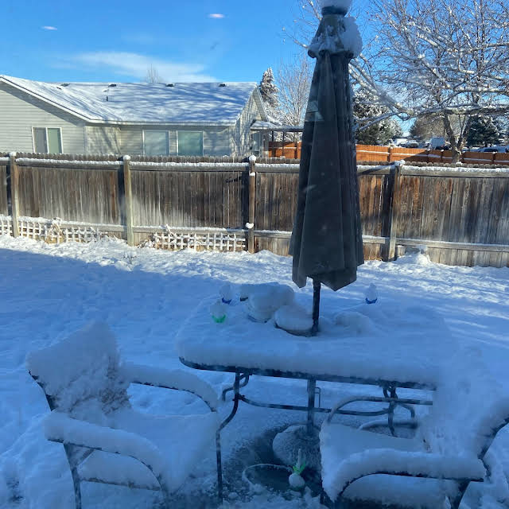
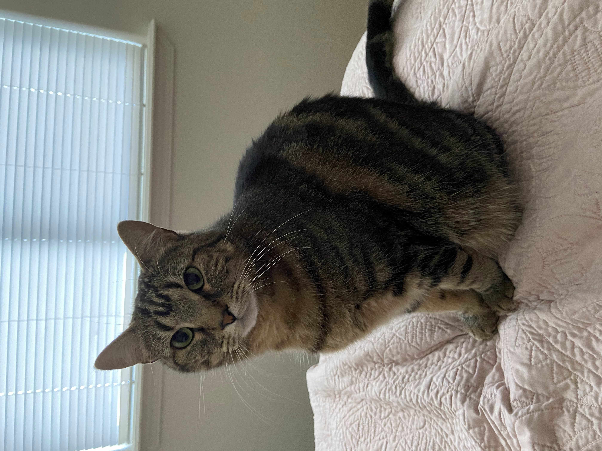

blog
MARCH 1st, 2023
We got a sh*t ton of snow yesterday. Some people might think winter is overrated, but I think winter is my favorite season of the year. There's something about the snow that just puts me in a feeling I can't describe. Maverick loves the snow, too! Truly a winter wonderland. Also, I found out how to fix the wrapper animation overlapping the navbar when you scroll. Also also, I added a cool translateY animation when you open up the website. That's all you need to know.
FEBRUARY 26th, 2023
Hello? Is anyone there? Hello? Anyways, this website is now live. I've been wanting to have a website of my own for quite some time now. Back then, I made websites with Google Sites, but a few years later, I figured that coding one in HTML and CSS was the better option. I coded one in September 2022, but then lost motivation. Finally, a few months later, I decided to get back to coding and start over. This time, I had motivation to finish this project. A lot of times, I seem to lose every single ounce of motivation in my projects. Especially with Sparta remixes. I think this website looks amazing for now. Though, there is one thing I do not know how to fix here. Oh well, I'm just gonna keep it this way. That's it for now.
My sister's fat cat, Howl
Any questions? You can contact me or send me fan-art via Discord DMs (Captain Sophie, #3892). I don't feel comfortable showing my email here.
Warning: If you reupload any of my content without proper consent, I will take it down. I mean it.
C199 2023